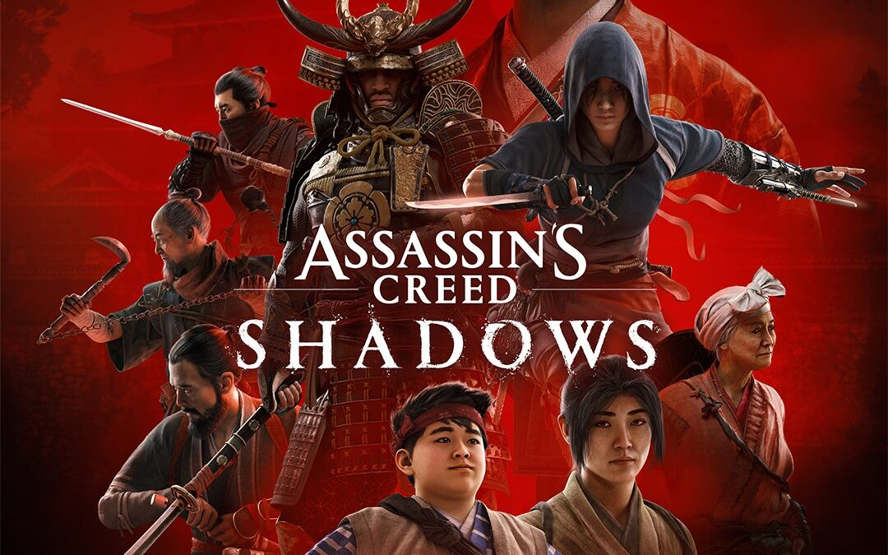

Assassin's Creed Shadows

- Assassin’s Creed Shadows representa uma nova era para uma das franquias mais conhecidas e bem sucedidas da história dos games. Completando a maioridade em 2025, quando celebrará 18 anos do primeiro jogo da saga da Irmandade dos Assassinos, pode-se dizer que a série está mais madura e completa do que nunca.
Curiosidades
- Por muito tempo, o Japão foi visto como um país perfeito para um Assassin’s Creed. Até que saiu Ghost of Tsushima, que preencheu essa lacuna de forma gloriosa. Mas, mesmo assim, quando Shadows foi anunciado, ainda houve uma certa hype em torno da viagem para aquele histórico período feudal de tantas presenças fortes no imaginário popular – samurai, shinobi, ronin e por aí vai.
Só que ela acabou sendo ofuscada pelas críticas de parte da comunidade ao fato de a Ubisoft ter escolhido contar, em Assassin’s Creed Shadows, a história de Yasuke, uma figura conhecida da história japonesa por ter chegado lá como escravo de jesuítas e ter se tornado um grande guerreiro – como explicado aqui pela BBC.
- Pois bem, aqui cabe o disclaimer de que, como a própria Ubisoft reforça, Assassin’s Creed não é 100% fiel aos fatos históricos dos períodos que retrata. É até meio óbvio, mas dito isso, se você fazia parte da galera que estava criticando o jogo só por causa disso e batendo na tecla da famosa “lacração”, também pelo fato de a outra protagonista ser mulher, só perdeu seu tempo falando besteira na internet.
"O enredo é muito bem desenvolvido, e os personagens são incríveis. Cada um com seu jeitinho.
- Inclusive, este é um dos grandes pontos altos de Assassin’s Creed Shadows: poder escolher entre uma jovem ninja, super ágil e que usa as sombras para ganhar vantagem e agir com a marca registrada da série, a furtividade, ou um cara enorme, imponente fisicamente e que usa a brutalidade como principal arma para conseguir o que quer.
E o mais legal é que os dois funcionam super bem. Não dá para dizer que um é melhor do que o outro – a não ser, claro, em situações específicas. Naoe é excelente para exploração, fazer as coisas rápido e alcançar os lugares mais altos/escondidos. Yasuke é incrível para combates contra os chefes e batalhas no geral, por ser super resistente e dar bastante dano.
- Mas fique tranquilo: você não perde (quase) nada se preferir um ou outro. Especialmente porque o jogo também adicionou uma função interessante que dá ao jogador a opção de escolher entre seguir os eventos canônicos, com o roteiro pensado pelos devs, ou ter diálogos que impactam nas ações seguintes dos personagens.
Os caminhos deles se cruzam por conta de eventos importantes que são contados nas primeiras horas do jogo, quando você vive um evento traumático com Naoe e a mudança de vida de Yasuke, que larga os Templários e se torna homem de confiança de um lorde japonês, e também por flashbacks em pequenas sidequests durante a jornada. De uma dupla improvável, nasce uma combinação perfeita para uma nova era de Assassin’s Creed.
Esqueça as missões tradicionais. Em Shadows, você é guiado por “objetivos” – que são divididos, basicamente, em pessoas. Sejam aliados, sejam inimigos, sejam os próprios protagonistas. São múltiplos arcos diferentes – e que podem ser completados sem aquela linha de história padrão. É claro que há limitações de nível e alguns fatos que precisam acontecer antes de outros, mas a liberdade é enorme.

- Estamos falando de um mundo realmente aberto, onde você toma os caminhos que desejar e usa as estratégias que achar mais convenientes. O caminho principal é derrotar os “Shinbakufu”, guerreiros de elite que geram o caos na vida de Naoe no começo do jogo e devem ser caçados até o fim, para recuperar um item importante e entender o que realmente está por trás das disputas daquele Japão feudal tão intenso.
Mas, enquanto faz isso, há outras organizações, como os Daikan Corruptos, os Shinobi Godai, A Árvore Retorcida e por aí vai. Sem falar nas quests para ajudar os povos das variadas regiões do enorme mapa do jogo, como Omi, Yamato, Harima e Iga. E, claro, nas histórias de Yasuke e Naoe, além do uso do Animus para desbloquear cada vez mais conteúdo e recompensas.
Assassinos
- E, sim, tem muito conteúdo. A “campanha” não é tão longa quanto a de Valhalla, mas tem muita coisa para fazer. Desde as atividades que você descobre ao simplesmente explorar até as quests e os assassinatos, Assassin’s Creed Shadows é um prato cheio para quem tem fome de Assassin’s Creed. Com direito até à personalização de um esconderijo, com construções, decoração e por aí vai.
Aqui, claro, depende do quanto você está interessado nisso tudo. Se a parte principal dos fatos pode ser resolvida em cerca de 30 horas, aproveitar o jogo ao máximo pode dobrar ou até triplicar isso aí. Obviamente, tudo irá depender do nível de dificuldade, das opções de acessibilidade (que são muitas) e por aí vai.
- Mas a real é que, para quem gosta, nem dá para sentir. Tudo flui de uma maneira bem natural, talvez por conta dessa maior liberdade, e você vai querendo jogar mais. Não parece forçado, como já aconteceu em outros jogos da série. É claro que pode dar aquela fadiga de mundo aberto, com um sentimento de repetição de algumas quests, mas a diversão fala mais alto.
Especialmente porque Assassin’s Creed Shadows tem sistemas de progresso bem interessantes: os pontos conquistados em missões específicas do Animus dão recompensas exclusivas, o sistema de Maestria com Pontos de Conhecimento permite evoluir as diferentes habilidades e armas de cada personagem, e o seu inventário com elementos de RPG dá espaço para criar várias builds diferentes de acordo com suas necessidades.
Yasuke, por exemplo, pode usar Katana, Naginata, Kanabo, Teppo e Arco – além de ter sua skill tree de Samurai. Naoe, por sua vez, além das habilidades de shinobi e assassina, pode evoluir com as seguintes armas: Katana, Kusarigama, Tanto e Ferramentas. Ambos ainda têm itens de vestimenta que podem dar diferentes atributos, como vida, chance de crítico e adrenalina.
Tudo isso torna o gameplay mais variado, estratégico, divertido e desafiador. A Ubisoft acertou em cheio nos elementos que mais importam em um jogo da série: movimentação e combate. Especialmente pelo fato de que é notória a diferença de jogar com Naoe e Yasuke. Não são apenas skins, é quase que um jogo diferente com cada um.
- Em termos de combate, é bem legal também notar a diferença que cada arma traz. Os inimigos também são distintos, de acordo com as possibilidades de um jogo “realista” no Japão feudal, obviamente. Por um lado, fica a sensação de que as lutas acabam sendo bem parecidas – até mesmo as boss fights. O que, de novo, acaba sendo natural pela temática do game.
Mas vale destacar também as novas animações de assassinato. Sejam aquelas bem na pegada de Assassin’s Creed, nas sombras, sejam as mais brutais – trazendo mais sangue do que nunca na história da saga. Com Yasuke, inclusive, o assassinato é realmente chamado assim – de assassinato brutal. Aliás, tente dar um “salto de fé” com ele para ter uma surpresa bem divertida.
Por falar nisso, em ambientação, Assassin’s Creed Shadows é um deleite. Desde o modo imersivo, com direito às falas nos idiomas originais dos personagens, à bela trilha sonora e os efeitos de áudio, além de um sistema incrível de clima dinâmico, ele entrega uma experiência bastante completa. Os cenários são lindos, especialmente com a variação climática, e os protagonistas também.
Assassin’s Creed Shadows: vale a pena?
- Reinventar, resplandecer. Nas palavras de Marcelo Pires Vieira, o Belo, uma descrição perfeita para o que Assassin’s Creed vem fazendo desde Origins. Ali, os rumos da franquia mudaram totalmente e, desde então, a cada game, a Ubisoft vem fazendo pequenos ajustes para deixar a experiência ainda melhor.
Entre altos e baixos naturais de uma saga de tanto tempo, é importante aprender com os erros e potencializar os acertos. Assassin’s Creed Shadows faz isso muito bem – trazendo a experiência definitiva desta reformulação da saga. Em qual lugar ele vai ficar no ranking da série? Não sabemos, mas não dá para negar que merece bastante reconhecimento.
As prévias já indicavam uma boa recepção, inclusive a nossa, e o resultado final segue a expectativa. Assassin’s Creed Shadows é um baita jogo – mais um nesse ano de 2025, que já vem repleto de excelentes games, e deve ficar ainda melhor nos próximos meses.
- Tem problemas? Claro. Dois deles, inclusive, já viraram até cânon em Assassin’s Creed, né? Os pequenos bugs/glitches de movimentação (apesar de aqui ser necessário frisar que Shadows tem um ponto bem positivo aqui, porque é possível andar por montanhas e escalar diversos ambientes em que certamente haveria paredes invisíveis em outros títulos) e os crashes.
Algo bacana de frisar também é como ele já dá dicas do que está por vir na franquia, com um menu bem bacana mostrando os outros jogos da saga e dando um contexto para cada um dos importantes capítulos que vimos nesses 18 anos da série. Aliás, um ponto interessante de contextualização: os eventos de Assassin’s Creed Shadows, que será lançado em 20 de março para PS5, Xbox Series e PC, estão entre Valhalla e Odyssey no cânon.
Certamente, virão muitos outros, e a Ubisoft está muito bem posicionada para garantir que o futuro seja mais lindo do que o presente, que tão lindo é.